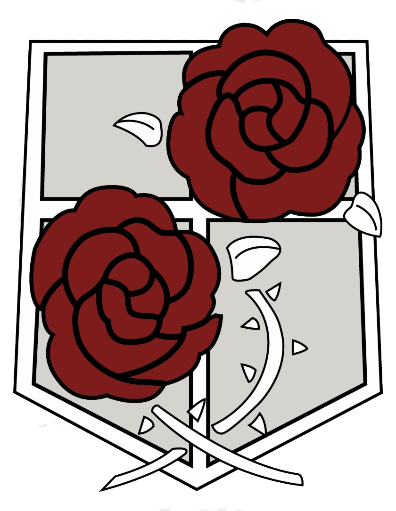
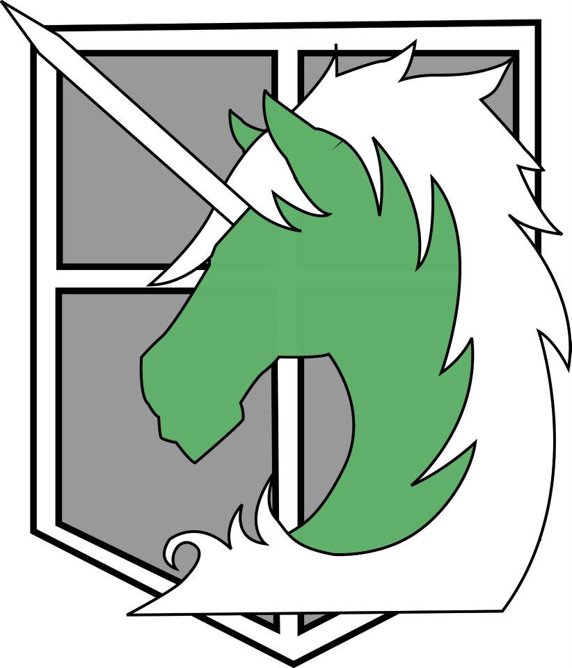
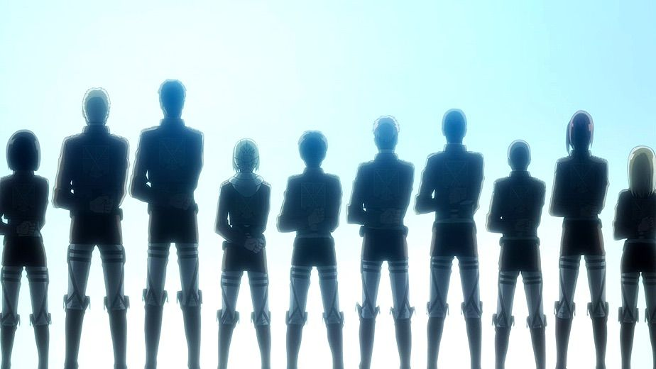

The scouting legion. The people that risk their life on the daily to scout the remaining lands outside of the three walls that keep humanity safe. They try to make sure humanity gets more land to live on and survives.

The Garrison. Basically the same as any other normal police officer. They strive to keep the peace within the walls and disrupt small civillian fights. They also guard the walls and are usually the ones that are the laziest.

The Military Police is the most corrupted service within the walls. They spend most of their time drinking and playing games but are also seen as a couple of the most high ranked people. Only the top 10 highest ranked trainies can enter this stage.
The Military Police is the most corrupted service within the walls. They spend most of their time drinking and playing games but are also seen as a couple of the most high ranked people. Only the top 10 highest ranked trainies can enter this stage.

The trainies are the ones willing to enter the military and will ost end up as new soldiers for the Garrison and the Scouting legion.
The trainies are the ones willing to enter the military and will ost end up as new soldiers for the Garrison and the Scouting legion.